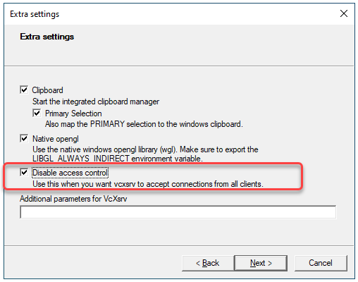
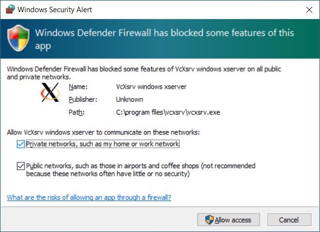
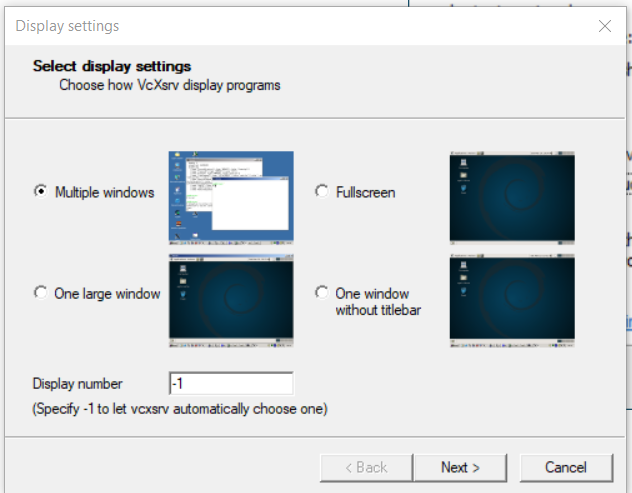
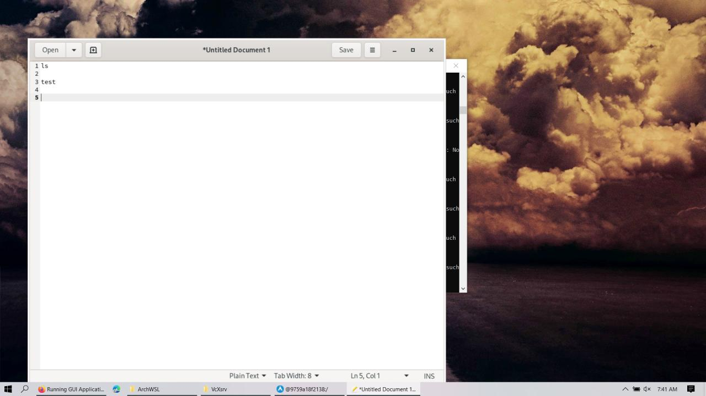
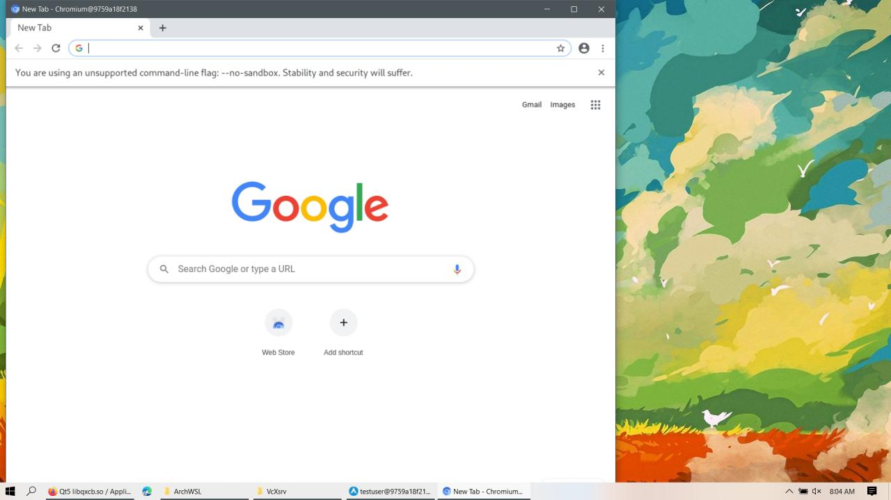
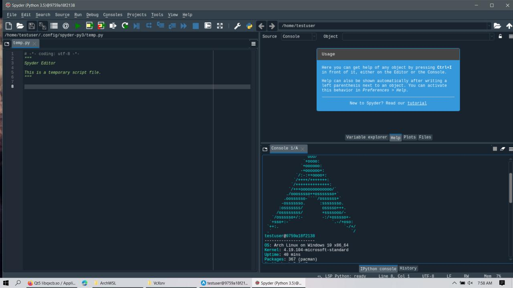

Running GUI apps from docker inside WSL2.0 as standalone application

##
Another day, again my anaconda crashed for no reason. I decided to never use python on windows without linux vm/ docker.
I already had my own docker image created here https://hub.docker.com/repository/docker/rushichaudhari/zipline1.3.0/
but I wondered If I could use GUI in it, luckily I managed to do so.
So here are the steps :-
Pre-requirements:
- Windows 10
- WSL
For now, it is necessary to install a third-party App to run the GUI Apps, but Microsoft announced on //build 2020 that they will release soon an improvement that will not require any third-party component to run Linux GUI Apps on Windows Desktop.
Installing the X Server
The X server is a provider of graphics resources and keyboard/mouse events. I am using the VcXsrv Windows X Server that is open-source and is frequently update.
The first step is to install the third-part display manager called VcXsrv Windows X Server available at:
https://sourceforge.net/projects/vcxsrv/
After installing launch the xlaunch.exe, make sure disable access control is clicked to avoid permission error

Also allow VcxSrv in the firewall

Select multiple windows under display settings popup

And start with no client.
Installing Archlinux on WSL
I’ve used https://github.com/yuk7/ArchWSL/ for linux on WSL because arch is completely bloat free so I could install only what I need and save my space. Its installation is easy, just double-click the Arch.exe and it will be set up. For more details refer here
https://github.com/yuk7/ArchWSL/wiki/How-to-Setup
After getting Arch shell, Install docker
sudo pacman -Syu docker
start docker daemon
sudo dockerd &
The docker image I used was https://hub.docker.com/repository/docker/rushichaudhari/zipline1.3.0 which I had built to run zipline without much hassle. I will be pulling the same here. It is pretty heavy 3-4GB, you can use any light image for base os to pull from hub.docker.com.
docker pull rushichaudhari/zipline1.3.0:firstpush
The next step is to set the DISPLAY environment variable on Linux to use the Windows host’s IP address as WSL2 and the Windows host are not in the same network device. It is necessary to run the following bash command to load the correct IP address on launch:
Inside WSL linux shell
export DISPLAY="`grep nameserver /etc/resolv.conf | sed 's/nameserver //'`:0"
Running the following command, it is possible to see that the $DISPLAY environment variable now has the Windows Host’s IP set:
echo $DISPLAY
Starting the docker
Get the docker Image Id
```sudo docker images``

Run a new docker container using
sudo docker run -it 86086b792ad1 /bin/bash
Now the current shell would be a archlinux shell which is inside a docker which is inside an archlinux wsl.
Map the DISPLAY again like we did before so docker would point to WSL2’s ip address which in turn points to Windows hosts ip address.
Inside docker linux shell
export DISPLAY="`grep nameserver /etc/resolv.conf | sed 's/nameserver //'`:0"
echo $DISPLAY
Installing some test applications
1
2
3
pacman -S chromium gedit python python3-pip neofetch
pacman -S qt5-base libxcb #libraries needed for spyder
pip3 install spyder
Some applications like chromium doesn’t work on root user create a temp user if needed, switch to this user before running that application.
1
2
useradd -m -G wheel -s /bin/bash testuser
passwd testuser
Make sure that XLaunch is running on windows host before starting any app.
Lets start gedit
1
gedit

1
chromium --no-sandbox

spyder3

These all apps are not inside host windows neither inside WSL!!
Enjoy :)
 Never miss a story from us, subscribe to our newsletter
Never miss a story from us, subscribe to our newsletter